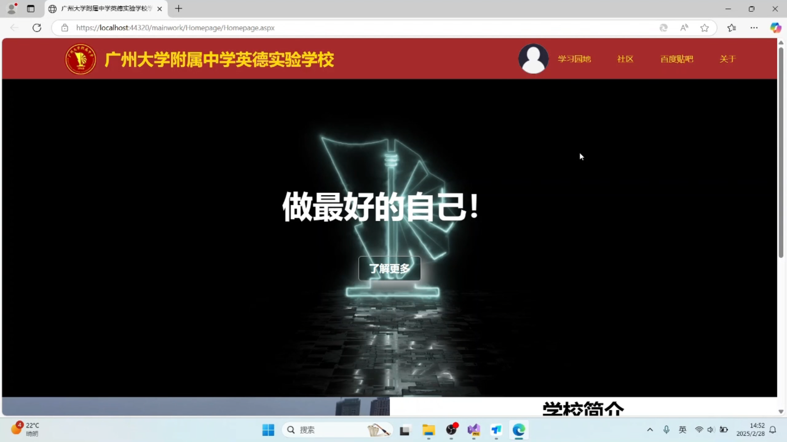
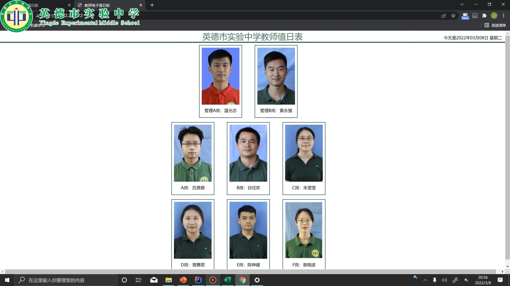

<!DOCTYPE html>
<html lang="zh-CN">
<head>
    <meta charset="UTF-8">
    <meta name="viewport" content="width=device-width, initial-scale=1.0">
    <title>案例分析</title>
<!-- 应用案例页面 -->
<section class="case-studies">
    <!-- 案例筛选 -->
    <div class="case-filters">
        <button class="filter-btn active" data-filter="all">全部案例</button>
        <button class="filter-btn" data-filter="school">中小学</button>
        <button class="filter-btn" data-filter="university">高等院校</button>
        <button class="filter-btn" data-filter="institution">教育机构</button>
    </div>

    <!-- 案例展示墙 -->
    <div class="case-wall">
        <!-- 中小学案例 -->
        <article class="case-card" data-type="school" data-impact="high">
            <div class="case-media">
                
                <div class="case-badge">
                    <span class="impact-level">🌟 最新案例</span>
                    <span class="industry-tag">.NET 4.8</span>
                </div>
            </div>
            <div class="case-content">
                <h3>基于Web的学校官网设计</h3>
                <div class="case-stats">
                    <div class="stat-item">
                        <div class="stat-value">5ms</div>
                        <div class="stat-label">网站延迟</div>
                    </div>
                    <div class="stat-item">
                        <div class="stat-value">1500+</div>
                        <div class="stat-label">人均数据调用</div>
                    </div>
                </div>
                <p>后台与数据库的数据传输运用了参数化查询，防止了前端SQL注入攻击...</p>
                <button class="case-cta" data-modal="case1">查看完整案例</button>
            </div>
        </article>

        <!-- 高校案例 -->
        <article class="case-card" data-type="university" data-impact="medium">
            <div class="case-media">
                
                <div class="case-badge">
                    <span class="impact-level">🏆 广东省一等奖</span>
                    <span class="industry-tag">Springboot</span>
                </div>
            </div>
            <div class="case-content">
                <h3>基于Web的教师电子值日板</h3>
                <div class="case-stats">
                    <div class="stat-item">
                        <div class="stat-value">1.5亿+</div>
                        <div class="stat-label">浏览量</div>
                    </div>
                </div>
                <p>通过IDEA 可以直接打包成war文件，前端采用themeleaf模板...</p>
                <button class="case-cta" data-modal="case2">查看完整案例</button>
            </div>
        </article>

        <!-- 更多案例... -->
    </div>
    <div class="case-modal" id="caseModal">
        <div class="modal-content">
            <button class="close-modal">&times;</button>
            <div class="modal-body"></div>
        </div>
    </div>
</section>
<footer class="deepseek-footer">
    <div class="footer-content">
        <p>By 
            <svg class="deepseek-logo" viewBox="0 0 24 24" width="20" height="20">
                <path fill="currentColor" d="M12 2C6.48 2 2 6.48 2 12s4.48 10 10 10 10-4.48 10-10S17.52 2 12 2zm-1 17.93c-3.95-.49-7-3.85-7-7.93 0-.62.08-1.21.21-1.79L9 15v1c0 1.1.9 2 2 2v1.93zm6.9-2.54c-.26-.81-1-1.39-1.9-1.39h-1v-3c0-.55-.45-1-1-1H8v-2h2c.55 0 1-.45 1-1V7h2c1.1 0 2-.9 2-2v-.41c2.93 1.19 5 4.06 5 7.41 0 2.08-.8 3.97-2.1 5.39z"/>
            </svg>
            <span class="brand-name">YDGFOP DeepSeek</span>
        </p>
    </div>
</footer>
<style>
    /* 案例页面样式 */
    .case-studies {
        max-width: 1400px;
        margin: 2rem auto;
        padding: 0 1rem;
    }

    .case-filters {
        display: flex;
        gap: 1rem;
        justify-content: center;
        margin: 3rem 0;
        flex-wrap: wrap;
    }

    /* 筛选按钮 */
    .filter-btn {
        padding: 0.8rem 2rem;
        border: 2px solid #e2e8f0;
        border-radius: 2rem;
        background: transparent;
        color: #4a5568;
        transition: all 0.3s;
    }
    .filter-btn.active {
        background: #2b6cb0;
        border-color: #2b6cb0;
        color: white;
    }

    /* 案例卡片 */
    .case-wall {
        display: grid;
        grid-template-columns: repeat(auto-fit, minmax(320px, 1fr));
        gap: 2rem;
        padding: 2rem 0;
    }

    .case-card {
        background: white;
        border-radius: 1rem;
        overflow: hidden;
        box-shadow: 0 4px 6px -1px rgba(0, 0, 0, 0.1);
        transition: transform 0.3s;
    }
    .case-card:hover {
        transform: translateY(-5px);
    }

    .case-media {
        position: relative;
        height: 240px;
        overflow: hidden;
    }
    .case-media img {
        width: 100%;
        height: 100%;
        object-fit: cover;
        transition: transform 0.3s;
    }
    .case-card:hover img {
        transform: scale(1.05);
    }

    .case-badge {
        position: absolute;
        top: 1rem;
        left: 1rem;
        display: flex;
        flex-direction: column;
        gap: 0.5rem;
    }
    .impact-level {
        background: rgba(255,255,255,0.9);
        padding: 0.4rem 1rem;
        border-radius: 2rem;
        font-size: 0.9em;
    }
    .industry-tag {
        background: #2b6cb0;
        color: white;
        padding: 0.4rem 1rem;
        border-radius: 2rem;
        font-size: 0.85em;
    }

    .case-content {
        padding: 1.5rem;
    }
    .case-stats {
        display: flex;
        gap: 1.5rem;
        margin: 1rem 0;
    }
    .stat-item {
        text-align: center;
    }
    .stat-value {
        font-size: 1.8rem;
        font-weight: 600;
        color: #2b6cb0;
    }
    .stat-label {
        font-size: 0.9em;
        color: #718096;
    }

    .case-cta {
        width: 100%;
        margin-top: 1rem;
        background: #2b6cb0;
        color: white;
        padding: 0.8rem;
        border: none;
        border-radius: 0.5rem;
        cursor: pointer;
    }

    /* 模态框样式 */
    .case-modal {
        display: none;
        position: fixed;
        top: 0;
        left: 0;
        width: 100%;
        height: 100%;
        background: rgba(0,0,0,0.5);
        z-index: 1000;
    }
    .modal-content {
        background: white;
        width: 90%;
        max-width: 800px;
        max-height: 90vh;
        margin: 5vh auto;
        border-radius: 1rem;
        padding: 2rem;
        overflow-y: auto;
        position: relative;
    }
    .close-modal {
        position: absolute;
        top: 1rem;
        right: 1rem;
        font-size: 2rem;
        background: none;
        border: none;
        cursor: pointer;
    }

    @media (max-width: 768px) {
        .case-wall {
            grid-template-columns: 1fr;
        }
    }
     /* 页脚样式 */
     .deepseek-footer {
        background: #2b6cb0;
        color: white;
        padding: 1.5rem 2rem;
        text-align: center;
        margin-top: 4rem;
        position: relative;
    }

    .footer-content {
        max-width: 1200px;
        margin: 0 auto;
        display: flex;
        justify-content: center;
        align-items: center;
        gap: 0.8rem;
    }

    .deepseek-logo {
        vertical-align: middle;
        margin: 0 0.3rem;
        transition: transform 0.3s;
    }

    .brand-name {
        font-weight: 600;
        letter-spacing: 0.5px;
    }

    .deepseek-footer:hover .deepseek-logo {
        transform: rotate(360deg);
    }

    @media (max-width: 768px) {
        .footer-content {
            flex-direction: column;
            gap: 0.5rem;
        }
    }
</style>

<script>
    // 案例交互功能
    document.addEventListener('DOMContentLoaded', () => {
        // 案例筛选
        document.querySelectorAll('.filter-btn').forEach(btn => {
            btn.addEventListener('click', function() {
                document.querySelectorAll('.filter-btn').forEach(b => b.classList.remove('active'));
                this.classList.add('active');
                
                const filter = this.dataset.filter;
                document.querySelectorAll('.case-card').forEach(card => {
                    card.style.display = (filter === 'all' || card.dataset.type === filter) 
                        ? 'block' 
                        : 'none';
                });
            });
        });

        // 案例详情模态框
        const modal = document.getElementById('caseModal');
        document.querySelectorAll('.case-cta').forEach(btn => {
            btn.addEventListener('click', function() {
                const caseId = this.dataset.modal;
                fetch(`/cases/${caseId}.html`)
                    .then(response => response.text())
                    .then(html => {
                        modal.querySelector('.modal-body').innerHTML = html;
                        modal.style.display = 'block';
                    });
            });
        });

        // 关闭模态框
        modal.querySelector('.close-modal').addEventListener('click', () => {
            modal.style.display = 'none';
        });
        window.addEventListener('click', (e) => {
            if (e.target === modal) {
                modal.style.display = 'none';
            }
        });

        // 图片懒加载
        const lazyImages = document.querySelectorAll('img[loading="lazy"]');
        const observer = new IntersectionObserver((entries) => {
            entries.forEach(entry => {
                if (entry.isIntersecting) {
                    const img = entry.target;
                    img.src = img.dataset.src;
                    observer.unobserve(img);
                }
            });
        });
        lazyImages.forEach(img => observer.observe(img));
    });
</script>